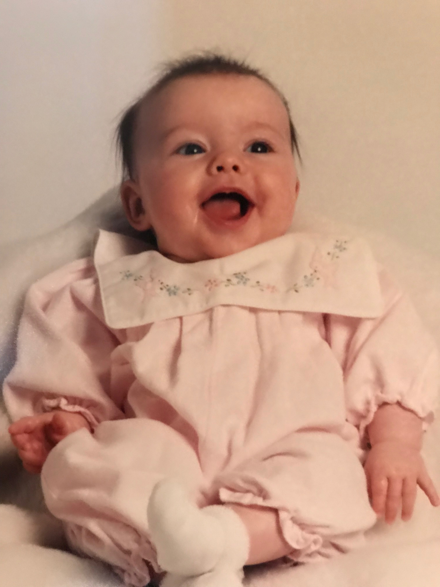
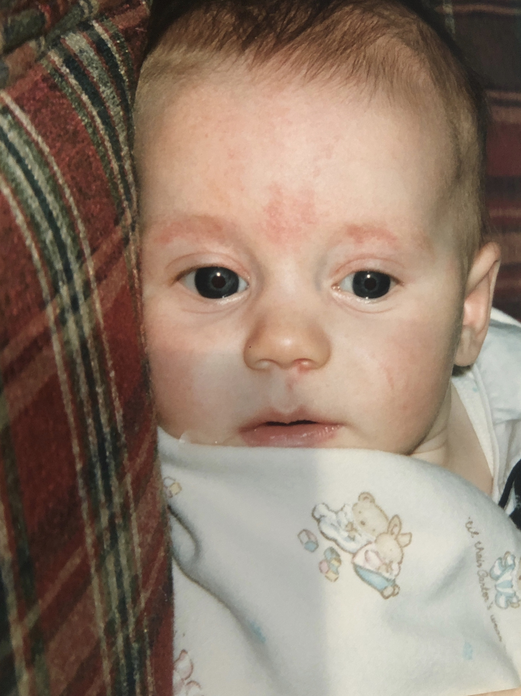
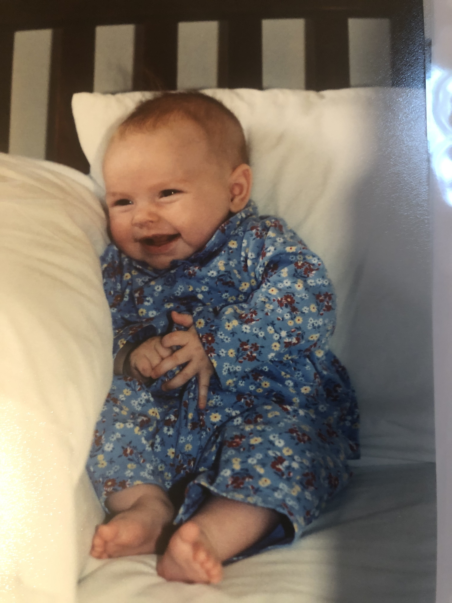
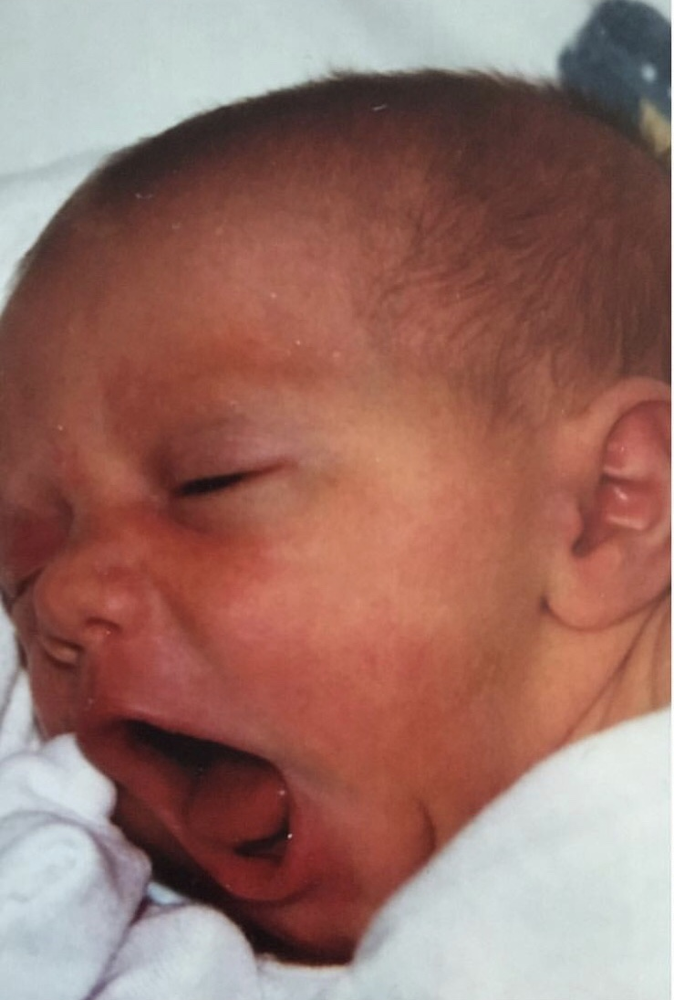

This is her story, told by five female students:
AP Smith, who was 6 months old;
Sarah Hall, who was almost 2 months old;
Lauren Hassell, who was 1 month old;
Tate Mikkelsen, who was 3 days old;
Kaelan McCabe, who would not be born for 18 more months
...when this story broke. Monica was 22.
We are roughly the age she was when her life changed forever. We have grown up in a time where people talk openly about sexual assault, harassment, consent and power imbalances. Our definitions of these words and concepts differ from those of the generations preceding us.

For us, Monica Lewinsky is not a tramp, tart, slut, whore, bimbo, and, of course, 'that woman.'" Her life is an inspiring story of survival.